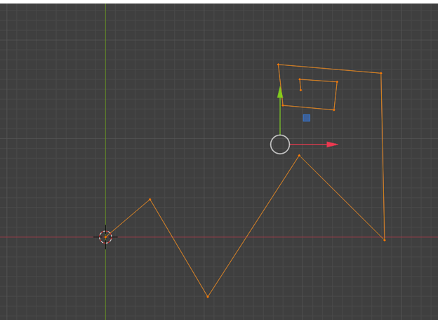
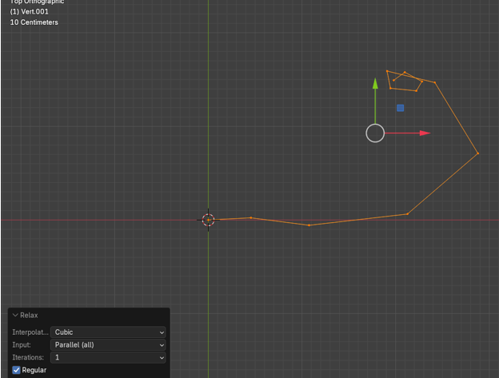
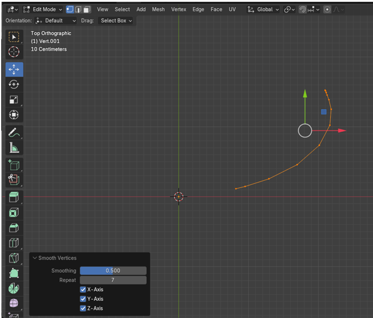

~7 Relax, Ummm... Err... Smooth Vertices~
8/11/2025
Use The Loop tool method on an edge loop on a box
Cube Results after using Smooth Vertices
What is Relax?
Relax is a tool inside of Loop tools, which will attempt to take your vertices and relax them.But actually "relax" is just another term for "Smooth Verticies." So if you are familar with "Smooth Verticies," don't be thrown off by this change in terminology.
How would you use Relax?
Well, if you have the Extra Mesh Objects enabled from the Edit-Preference section of Blender, you will have the ability to add a Single Vertex from the add menu.
Now, with the extra Mesh tools enabled, we can add this Single Vert in Object mode. You will also find that just adding this Vert, will throw you automatically into Edit Mode.
Ok, so let’s take this Vert, select it, hit the E key and extrude it. Keep extruding this Vertex until you have something that will give us a basis for a curve.
Now with the entire curve selected we can start using the Relax tool from the Loop tools. So, right click and choose Relax.
The Last Operation Dialog Box
So, we hit the Relax button, now let’s take a look at how we can control what we have done. The box will show the last setting that you used for this dialog box. This one is showing 1 iteration, which means it went through it smoothing operation one time. We have the option to choose up to 25 iterations from this box.
This is showing what this curve will look like after 1 iteration

This is what this curve will look like after running it the max number of times.
If we take this curve into Object mode now after 25 iteration, you will find that it still is not very smooth but it did attempt to smooth or relax things a bit.
Blender’s Smooth Method
Blender also has its own method for smoothing these vertices out and we can try that. Take those vertices that we created in Edit mode back to what we had, before we did the Relax maneuver on it. You can find your history in the Edit menu at the top of the screen.
Hit the A key on the keyboard to select all of the vertices again.
Vertex- Smooth Vertices
This is what your curve will look like when you hit the Smooth Vertices option in Blender.

If you change the Repeat options to 40 times, you can actually straighten out this line. This is a lot more control over things then you were ever allowed by the Loop Tools method.
By the Way, if you try and do that curly loop at the top of the curve, you will find that neither one of these methods seem to tame that one very well.
Use The Loop tool method on an edge loop on a box
Let’s try using the loop tool method on a cube. Here I just messed up an edge loop in Edit mode.

This is what this looks like after using the Loop tool method of Relax. Yeah, that doesn’t look quite right.

Cube Results after using Smooth Vertices
Now let’s try that same edge loop and use Smooth Vertices on it instead. To me, this is the result that you are probably really going for. So, Blenders own method wins this fight substantially, as far as I am concerned.
You can decide for yourself. You can try both methods and use the best one for your own needs. But I think most of the time you will probably ditch the Loop Tool’s version for this procedure, and just go back to using the Blender method.
Well, that is about it for this tutorial. Try working a few examples for yourself, and just have fun.